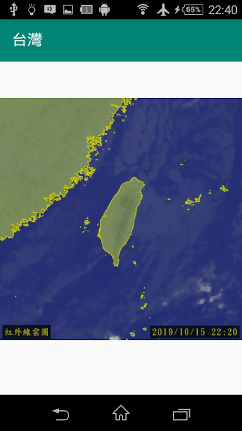

目前讓使用者可以觀看以下氣象局提供的圖
全球、東亞、台灣、高解析度、雷達回波圖、台灣 (可見光)、台灣 (色調強化)、台灣 (黑白)、高解析度 (可見光)、
高解析度 (色調強化)、高解析度 (黑白)、雷達 (臺灣(較大範圍) 無地形)、雷達 (臺灣(較大範圍) 有地形)、
雷達 (臺灣(鄰近區域) 無地形)、雷達 (臺灣(鄰近區域) 有地形)、東亞 (可見光)、東亞 (色調強化)、東亞 (黑白)。
Android App
螢幕截圖
Google Play 連結
氣象衛星圖 WeatherSatelliteMapiOS App
螢幕截圖
App Store 連結
氣象衛星圖 WeatherSatelliteMap